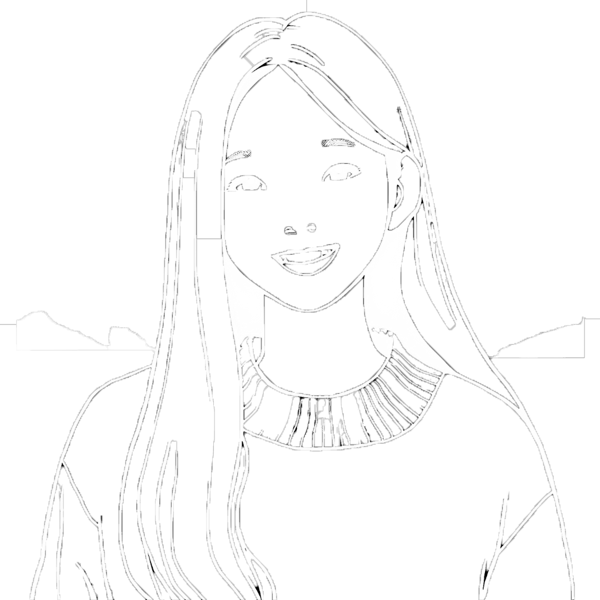

Hi, my name is Faye,
DESIGNER AND ILLUSTRATOR

I am currently a second-year undergraduate design student at Parsons School of Design, majoring in Design and Technology. As a design and tech enthusiast, I'm constantly finding the sweet spot where creativity meets innovation. Whether it's crafting sleek, user-friendly interfaces or diving into the latest design trends, I am all about making things that are both functional and visually striking. My passion lies in turning ideas into something tangible, blending artistry with technology to create designs that not only look good but also work beautifully. Always eager to learn and explore, I am here to push boundaries, experiment, and bring fresh, creative solutions to life in the ever-evolving world of design and tech.
ABOUT ME
My interests include cooking, where I enjoy experimenting with tastes and sharing meals, as well as taking on creative projects that bring ideas to reality. I'm looking forward to pursuing a career in creative technology or interactive design, where I can use my technical talents and ideas to create meaningful experiences. I've always been attracted by technology since it allows us to communicate, solve problems, and express ourselves. Whether I'm coding, making games, or creating one-of-a-kind digital experiences, I adore pushing limits and discovering new methods to bring ideas to life.